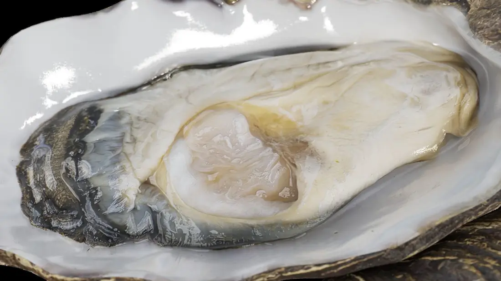
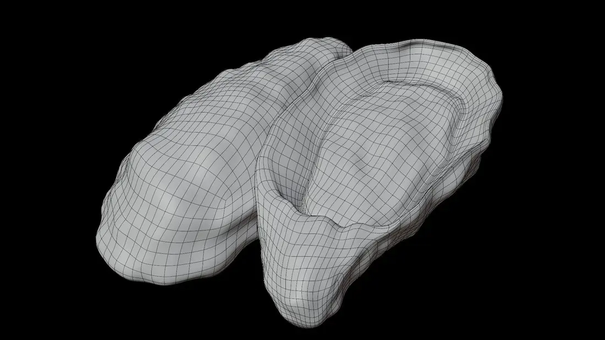
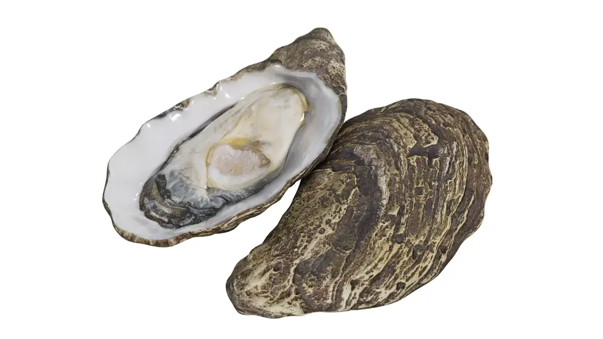
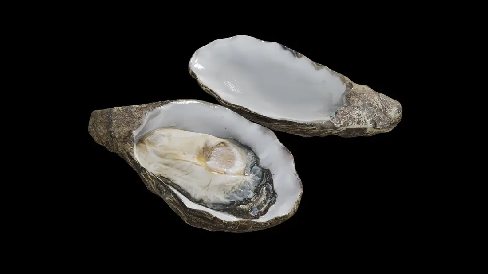

Vỏ & bản lề
Hai mảnh bất đối xứng bằng calcium carbonate; mảnh trái thường bám chắc vào giá thể.


Crassostrea belcheri không có đầu, không có chân phát triển và không có siphon thật. Cơ thể nằm giữa hai thùy áo, dựa vào lông chuyển của mang để duy trì dòng nước.
Hai mảnh bất đối xứng bằng calcium carbonate; mảnh trái thường bám chắc vào giá thể.
Tiết vật liệu tạo vỏ, lót khoang áo và cảm nhận thay đổi của môi trường.
Mang tạo dòng nước, trao đổi khí và giữ vi tảo hay vật chất hữu cơ lơ lửng.
Xúc biện môi chọn hạt; dạ dày, tuyến tiêu hóa và ruột xử lý rồi hấp thu thức ăn.
Tim gồm một tâm thất và hai tâm nhĩ, bơm huyết dịch trong hệ tuần hoàn hở.
Tuyến sinh dục lan trong khối tạng; giao tử phóng ra nước và thụ tinh ngoài.
Ảnh thật giúp xác nhận độ bất đối xứng của vỏ, lớp xà cừ, bờ áo sẫm màu và vị trí cơ khép vỏ.


Hàu cửa sông nhiệt đới thuộc họ Ostreidae, sống bám ở vùng triều và cận triều nước lợ–mặn. Phân bố được ghi nhận tại Đông Nam Á; là đối tượng nuôi và khai thác có giá trị.
Các thông số kích thước và sinh thái biến thiên theo vùng nuôi, nền đáy, độ mặn, mùa vụ và phương pháp đo. Trang ưu tiên mô tả giải phẫu định tính, không dùng như công cụ chẩn đoán hay định loại duy nhất.
Tra cứu WoRMS ↗